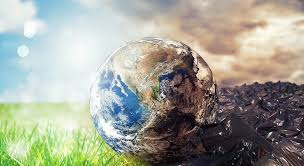

La contaminacion es la introduccion de un contaminante dentro de un ambiente natural que causa inestabilidad, desorden, dano o malestar en un ecosistema,
en el medio fisico o en un ser vivo. El contaminante, puede ser una sustancia quimica, energia, como sonido, calor, o luz, o incluso genes. El elemento contaminante,
puede ser una sustancia extrana, energia, o sustancia natural, cuando es natural se llama contaminante cuando excede los niveles naturales normales. Es siempre una
alteracion negativa del estado natural del medio, y por lo general, se genera como consecuencia de la actividad humana.
Para que la contaminacion sea detectable, el contaminante debera estar en cantidad o concentracion suficiente como para provocar ese desequilibrio detectable
en el medio.
La proliferacion de agentes contaminantes tiene relacion con el consumo masivo, el consumo masivo de combustibles fosiles aumenta el efecto invernadero, y aumenta las
posibilidades de derames petroleros por la mayor necesidad de combustibles, el plastico por no ser biodegradable se acumula en tierra y en el mar
(como desechos marinos),los desechos industriales generalmente son consecuencia de accidentes o un bajo control de el dano que la industria puede ocasionar al
ambiente.
La contaminacion puede clasificarse segun el tipo de fuente de donde proviene, o por la forma de contaminante que emite o medio que contamina. Existen muchos agentes
contaminantes, entre ellos las sustancias quimicas (como plaguicidas, cianuro, herbicidas y otros), los residuos urbanos, el petroleo o las radiaciones ionizantes.
Todos estos pueden producir enfermedades, danos en los ecosistemas o el medio ambiente. Ademas existen muchos contaminantes gaseosos que juegan un papel importante
en diferentes fenomenos atmosfericos, como la generacion de lluvia acida, el debilitamiento de la capa de ozono y el cambio climatico.
Hay muchas formas de combatir la contaminacion, asi como legislaciones internacionales que regulan las emisiones contaminantes de los paises que se adhieren a estas
politicas. La contaminacion esta generalmente ligada al desarrollo economico y social. Actualmente muchas organizaciones internacionales como la ONU ubican al
desarrollo sostenible como una de las formas de proteger al medio ambiente para las actuales y futuras generaciones.